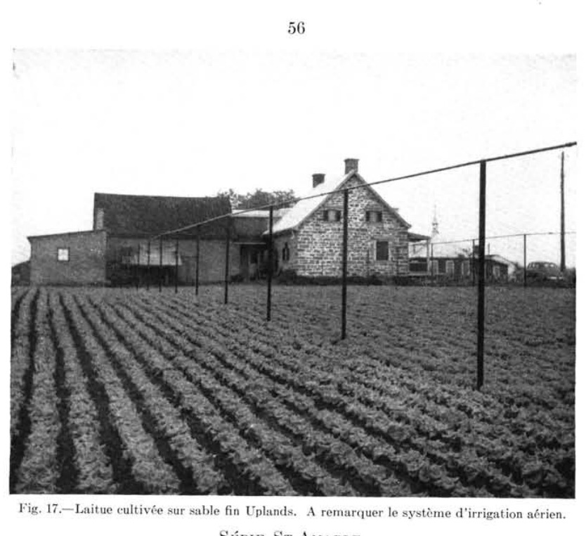
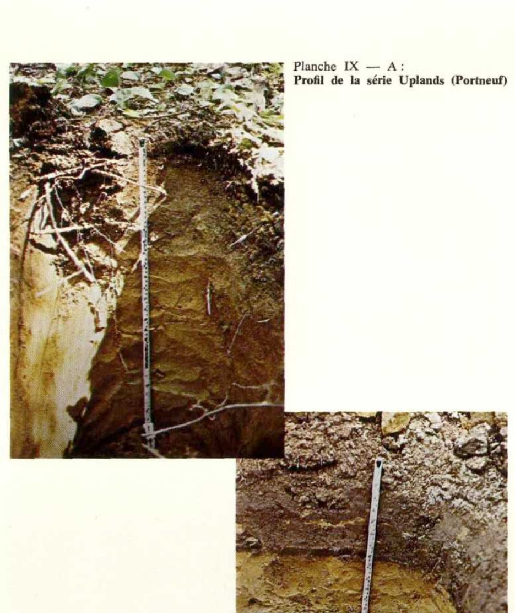
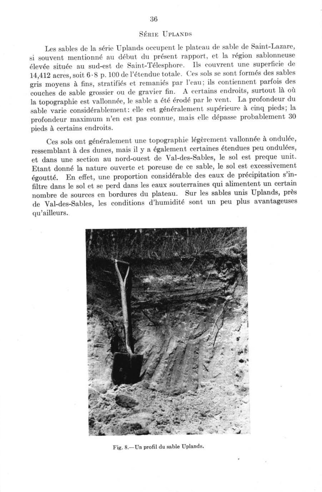
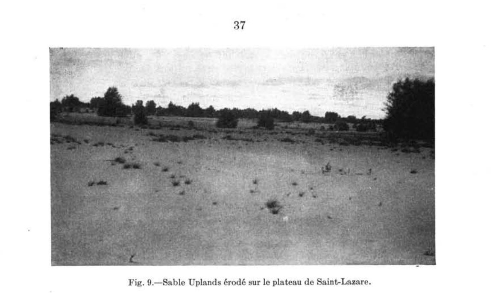
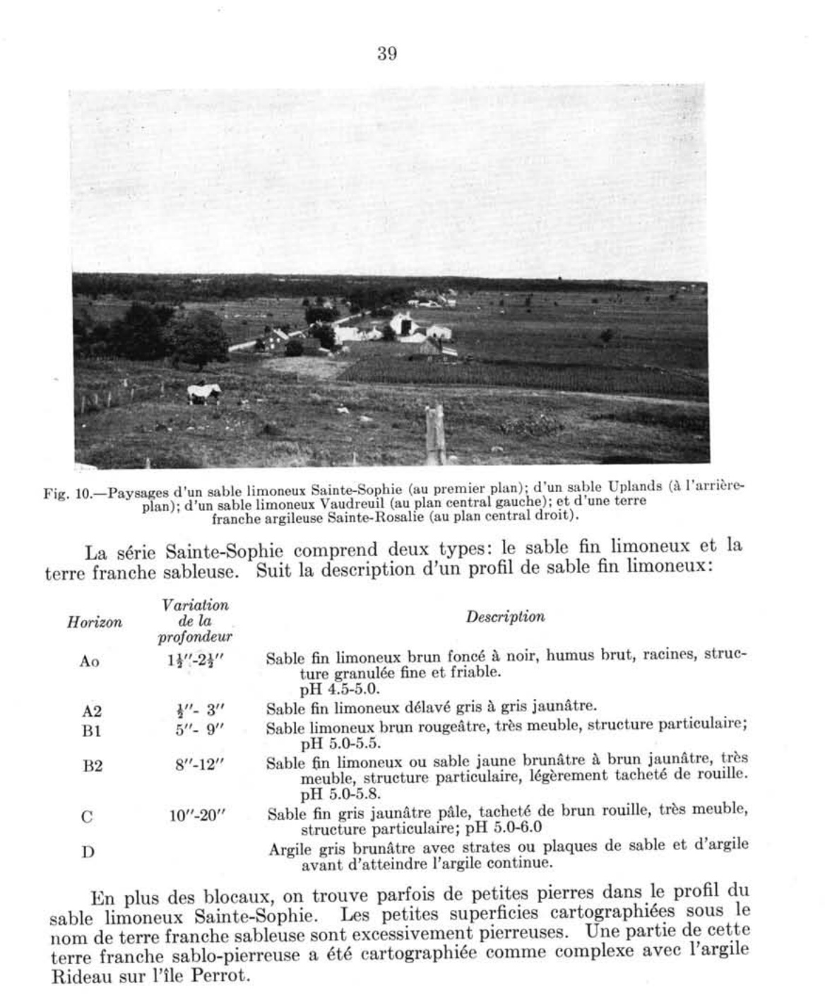

Identification & Caractéristiques Générales
La série Uplands se développe sur des dépôts meubles sableux d'origine deltaïque ou fluvioglaciaire, caractérisés par une épaisseur importante variant généralement de 7 à 15 pieds, et reposant en subsurface sur des sédiments argileux d'origine marine (argile de la mer de Champlain). Sur le plan géomorphologique, ces sols occupent les deuxième, troisième et quatrième terrasses des plaines de basses terres ainsi que des secteurs de topographie plane, ondulée à fortement vallonnée, avec des pentes pouvant être modérément abruptes au droit des gradins de terrasses. L'altitude de ces formations s'établit généralement entre 150 et 575 pieds au-dessus du niveau de la mer. Les matériaux parentaux sont constitués de sables moyens à fins, uniformes, généralement exempts de pierres en surface, bien que certaines phases locales présentent des lits de gravier dans les horizons sous-jacents.
Le profil morphologique se caractérise par un drainage naturel excessif à rapide, une perméabilité très élevée et une capacité de rétention en eau extrêmement faible en raison de la texture grossière et de la forte porosité du solaum. Le ruissellement de surface est négligeable, mais la mobilité éolienne est prononcée sur les sols nus dépourvus de couvert végétal, particulièrement au printemps et en période de sécheresse. Chimiquement, ces sols affichent une réaction fortement acide et une pauvreté naturelle marquée, découlant d'un lessivage intense des bases échangeables. Le taux d'argile très faible limite drastiquement la capacité d'échange cationique et la rétention des éléments nutritifs, lesquels sont rapidement entraînés par percolation au-delà de la zone radiculaire.
Sur le plan agronomique, les sols de la série Uplands présentent des contraintes majeures pour la production agricole intensive, principalement en raison de leur aridité chronique, de leur carence en éléments fertilisants et de leur forte sensibilité à l'érosion éolienne. Une proportion importante de ces superficies est présentement boisée ou est retournée à la forêt, dominée par des peuplements de pin blanc, de pin rouge, de bouleau blanc, de chêne rouge et de peuplier. Pour les terres maintenues en mise en valeur agricole, l'exploitation requiert des apports massifs et soutenus de matière organique (fumier, enfouissement d'engrais verts) afin d'améliorer la cohésion et la capacité de rétention hydrique, combinés à une fertilisation minérale fractionnée et à des applications régulières d'amendements calciques pour corriger l'acidité. L'installation de systèmes d'irrigation est souvent nécessaire pour soutenir les cultures maraîchères ou les grandes cultures, tandis que la mise en place de brise-vent et de pratiques de couverture végétale s'avère indispensable pour atténuer l'érosion éolienne. Les phases graveleuses, dotées d'une perméabilité excessive, sont généralement considérées comme impropres aux activités culturales et leur affectation optimale demeure le reboisement.
Classification Taxonomique & Environnement Pédologique
| Ordre Pédologique | Podzolique |
|---|---|
| Grand Groupe (SCSS) | Podzol humo-ferrique |
| Sous-Groupe Taxonomique | Podzol humo-ferrique orthique |
| Famille Pédologique | Sableuse, mixte sableux, acide |
| Mode de Dépôt Parental | Marin |
| Classe de Drainage Naturel | Très rapidement drainé |
| Régime Thermique & Humidité | Doux / Aride |
Description Morphologique du Profil Type
Séquences génétiques des horizons pédologiques caractérisant le profil type représentatif de la série Uplands :
Profil naturel (vierge) — Comté de Champlain
✓ Source : Comté de Champlain — Page 40Couleur Munsell : 7.5YR 2/0
Structure & Consistance : Polyédrique à granulaire
Description morphologique : Débris de végétaux mal décomposés, humifiés à la base; noir (7.5YR 2/0); pH : 5.1.
Couleur Munsell : 5YR 6/2
Structure & Consistance : Polyédrique à granulaire
Description morphologique : Sable gris rose (5YR 6/2-7/2); pH : 5.1.
Couleur Munsell : 7.5YR 5/4, 10YR 4/4
Structure & Consistance : Particulaire
Description morphologique : Sable moyen brun à brun jaune foncé (7.5YR 5/4-10YR 4/4); structure particulaire; très perméable; pH : 5.4.
Couleur Munsell : 7.5YR 5/6, 10YR 5/8
Structure & Consistance : Particulaire
Description morphologique : Sable moyen brun vif à brun jaune (7.5YR 5/6 - 10YR 5/8); structure particulaire; excessivement perméable; pH : 5.5.
Couleur Munsell : 7.5YR 6/4
Structure & Consistance : Polyédrique à granulaire
Description morphologique : Sable moyen brun clair (7.5YR 6/4); quelques taches de rouille; pH : 5.5.
Profil naturel (vierge) — Comté de Argenteuil
✓ Source : Comté de Argenteuil — Page 67Couleur Munsell : Non précisée
Structure & Consistance : Polyédrique à granulaire
Description morphologique : Humus noir et sable limoneux; pH 4.7-5.2.
Couleur Munsell : Non précisée
Structure & Consistance : Et lâche
Description morphologique : Sable fin lessivé gris brunâtre clair; sans structure et lâche; se présentant à des endroits dispersés ou de façon à former un horizon très discontinu lorsque le sol a été dérangé; pH 4.9-5.2.
Profil représentatif — Comté de Argenteuil — Phase graveleuse
✓ Source : Comté de Argenteuil — Page 68Couleur Munsell : Non précisée
Structure & Consistance : Polyédrique à granulaire
Description morphologique : Sable moyen à fin brun rougeâtre; lâche; (la formation ortstein est exceptionnelle); pH 4.9-5.2.
Couleur Munsell : Non précisée
Structure & Consistance : Polyédrique à granulaire
Description morphologique : Sable brun foncé à jaune brunâtre; sans structure; lâche; pH 5.2-5.5.
Couleur Munsell : Non précisée
Structure & Consistance : Polyédrique à granulaire
Description morphologique : Sable brun jaunâtre clair à brun pâle, comme ci-dessus.
Couleur Munsell : Non précisée
Structure & Consistance : Polyédrique à granulaire
Description morphologique : Sable fin à moyen brun pâle à gris clair; sans structure; passablement lâche; pH 5.2-5.8.
Profil cultivé (agricole) — Comté de Hull
✓ Source : Comté de Hull — Page 68Couleur Munsell : 10YR 4/3
Structure & Consistance : Polyédrique à granulaire
Description morphologique : Sable moyen et sable fin brun foncé (10YR 4/3); très perméable; pH 5.2 à 5.8.
Couleur Munsell : 10YR 4/4
Structure & Consistance : Polyédrique à granulaire
Description morphologique : Sable moyen et sable fin brun jaunâtre foncé (10YR 4/4); très perméable; pH 5.4 à 6.2.
Couleur Munsell : 10YR 5/6
Structure & Consistance : Monogranulaire
Description morphologique : Sable moyen brun jaunâtre (10YR 5/6); structure monogranulaire; très perméable; 5.4 à 6.2.
Couleur Munsell : 10YR 5/8
Structure & Consistance : Monogranulaire
Description morphologique : Sable moyen brun jaunâtre à jaune brunâtre (10YR 5/8–6/6); structure monogranulaire; très perméable; pH 5.4 à 6.4.
Couleur Munsell : 10YR 6/4
Structure & Consistance : Monogranulaire
Description morphologique : Sable moyen brun jaunâtre (10YR 6/4); structure monogranulaire; très perméable; pH 5.4 à 6.4.
Profil naturel (vierge) — Comté de Joliette — Phase graveleuse
✓ Source : Comté de Joliette — Page 43Couleur Munsell : 7.5YR 4/2
Structure & Consistance : Polyédrique à granulaire
Description morphologique : Sable moyen, sans structure, brun (7.5YR 4/2), meuble à faiblement cimenté. pH: 7.0.
Couleur Munsell : 5YR 3/4
Structure & Consistance : Polyédrique à granulaire
Description morphologique : Sable moyen, sans structure, brun rouge foncé (5YR 3/4), faiblement cimenté. pH: 6.0.
Couleur Munsell : 10YR 5/6
Structure & Consistance : Polyédrique à granulaire
Description morphologique : Sable moyen, sans structure, brun jaune (10YR 5/6), faiblement cimenté. pH: 6.1.
Couleur Munsell : 2.5Y 7/6
Structure & Consistance : Polyédrique à granulaire
Description morphologique : Sable moyen, sans structure, jaune (2.5Y 7/6), faiblement cimenté. pH: 6.1.
Profil naturel (vierge) — Comté de Joliette — Phase graveleuse
✓ Source : Comté de Joliette — Page 45Couleur Munsell : Non précisée
Structure & Consistance : Polyédrique à granulaire
Description morphologique : Feuilles non décomposées.
Couleur Munsell : 7.5Y 3/2, 5YR 2/2
Structure & Consistance : Polyédrique à granulaire
Description morphologique : Sable moyen à sable loameux, sans structure, brun très foncé (7.5Y 3/2) à brun rouge foncé (5YR 2/2), meuble. pH: 5.3 - 7.3.
Couleur Munsell : 2.5Y 8/2
Structure & Consistance : Polyédrique à granulaire
Description morphologique : Sable moyen à grossier, sans structure, blanc (2.5Y 8/2), meuble. pH: 5.7.
Couleur Munsell : 7.5YR 5/6
Structure & Consistance : Polyédrique à granulaire
Description morphologique : Sable moyen à grossier, sans structure, brun vif (7.5YR 5/6), meuble à légèrement cimenté. pH: 5.6 - 6.2.
Couleur Munsell : 10YR 5/6
Structure & Consistance : Polyédrique à granulaire
Description morphologique : Sable moyen à grossier, sans structure, brun jaune (10YR 5/6), meuble à légèrement cimenté. pH: 6.2.
Couleur Munsell : 2.5Y 6/6, 2.5Y 5/6
Structure & Consistance : Polyédrique à granulaire
Description morphologique : Sable grossier, sans structure, jaune olive (2.5Y 6/6) à olive clair (2.5Y 5/6), meuble. pH: 5.7 - 6.0.
Profil cultivé (agricole) — Comté de L'assomption
✓ Source : Comté de L'assomption — Page 52Couleur Munsell : 10YR 4/3
Structure & Consistance : Polyédrique à granulaire
Description morphologique : Sable moyen à fin, brun foncé (10YR 4/3); très perméable; pH 5.2 à 5.8.
Couleur Munsell : 10YR 4/4
Structure & Consistance : Monogranulaire
Description morphologique : Sable moyen à fin brun jaunâtre foncé (10YR 4/4); très perméable; structure monogranulaire; pH 5.4 à 6.2.
Couleur Munsell : 10YR 5/6
Structure & Consistance : Monogranulaire
Description morphologique : Sable moyen brun jaunâtre (10YR 5/6); structure monogranulaire; excessivement perméable; pH 5.4 à 6.2.
Couleur Munsell : 10YR 5/8
Structure & Consistance : Monogranulaire
Description morphologique : Sable moyen brun jaunâtre à jaune brunâtre (10YR 5/8-6/6); structure monogranulaire; excessivement perméable; pH 5.4 à 6.4.
Couleur Munsell : 10YR 6/4
Structure & Consistance : Monogranulaire
Description morphologique : Sable moyen brun jaunâtre pâle (10YR 6/4); structure monogranulaire; excessivement perméable; pH 5.4 à 6.4.
Profil représentatif — Comté de Maskinongé
✓ Source : Comté de Maskinongé — Page 31Couleur Munsell : 5YR 3/2
Structure & Consistance : Grossièrement feuilletée
Description morphologique : Débris de matière organique mal décomposée, un peu minéralisés, brun rouge foncé (5YR 3/2), structure grossièrement feuilletée; pH : 5.6.
Couleur Munsell : 5YR 6/2
Structure & Consistance : Polyédrique à granulaire
Description morphologique : Sable gris rose (5YR 6/2 - 7/2) en poche. pH : 5.1.
Couleur Munsell : 5YR 4/3
Structure & Consistance : Particulaire
Description morphologique : Sable moyen brun rouge (5YR 4/3 - 4/4), structure particulaire, un peu de concrétion d'alios; pH : 5.4.
Couleur Munsell : 5YR 5/6
Structure & Consistance : Particulaire
Description morphologique : Sable moyen jaune rouge (5YR 5/6) structure particulaire, assez meuble; pH : 5.6.
Couleur Munsell : 5YR 4/8
Structure & Consistance : Particulaire
Description morphologique : Sable moyen rouge jaune (5YR 4/8) structure particulaire, assez compacte, pH : 5.9.
Profil naturel (vierge) — Sols de l'île de Montréal
✓ Source : Sols de l'île de Montréal — Page 53Couleur Munsell : Non précisée
Structure & Consistance : Polyédrique à granulaire
Description morphologique : Sable limoneux noir et litière de feuilles à demi-décomposées; pH 4.9.
Couleur Munsell : Non précisée
Structure & Consistance : Polyédrique à granulaire
Description morphologique : Sable fin lessivé gris brunâtre clair; sans structure; lâche; pH 4.9.
Couleur Munsell : Non précisée
Structure & Consistance : Polyédrique à granulaire
Description morphologique : Sable fin ou moyen, brun rougeâtre; lâche (la formation d'ortstein est exceptionnelle); pH 4.9.
Couleur Munsell : Non précisée
Structure & Consistance : Polyédrique à granulaire
Description morphologique : Sable jaune brunâtre à brun foncé; sans structure; lâche; pH 5.4.
Couleur Munsell : Non précisée
Structure & Consistance : Polyédrique à granulaire
Description morphologique : Sable jaunâtre clair à brun pâle; sans structure; lâche; pH 5.4.
Couleur Munsell : Non précisée
Structure & Consistance : Polyédrique à granulaire
Description morphologique : Sable fin ou moyen brun très pâle ou gris clair; sans structure; passablement lâche; pH 5.2 à 5.8.
Profil forestier / boisé — Comté de Portneuf
✓ Source : Comté de Portneuf — Page 64Couleur Munsell : 5YR 2/1, 5YR 3/2
Structure & Consistance : Polyédrique à granulaire
Description morphologique : Matière organique à demi-décomposée, noire (5YR 2/1 h), brun-rouge foncé (5YR 3/2 s) ; très friable ; racines abondantes, moyennes, horizontales, exo-agrégats ; racines très abondantes, fines à microscopiques, non-orientées, exo-agrégats ; limite abrupte, régulière ; pH : 4.5.
Couleur Munsell : 10YR 6/3, 10YR 4/3
Structure & Consistance : Polyédrique à granulaire
Description morphologique : Loam sableux brun foncé à brun-jaune foncé (10YR 4/3 à 4/4 h), brun pâle (10YR 6/3 s) ; particulaire, très fine ; meuble ; racines abondantes, moyennes, horizontales, exo-agrégats ; racines peu abondantes, fines à microscopiques, non-orientées, exo-agrégats ; limite distincte, ondulée ; pH : 4.7.
Couleur Munsell : 10YR 5/8, 10YR 7/6
Structure & Consistance : Polyédrique à granulaire
Description morphologique : Sable loameux brun-jaune (10YR 5/8 h), jaune (10YR 7/6 s) ; particulaire, très fine ; meuble ; racines peu abondantes, fines à microscopiques, obliques, exo-agrégats ; limite distincte, ondulée ; pH : 4.8.
Couleur Munsell : 10YR 6/4, 2.5Y 7/4
Structure & Consistance : Polyédrique à granulaire
Description morphologique : Sable loameux à sable brun-jaune clair (10YR 6/4 h), jaune pâle (2.5Y 7/4 s) ; taches peu nombreuses, petites, faibles ; particulaire, très fine ; meuble ; pH : 5.2.
Profil forestier (sous boisé) — Comté de Soulanges — Phase unie et
✓ Source : Comté de Soulanges — Page 35Couleur Munsell : Non précisée
Structure & Consistance : Polyédrique à granulaire
Description morphologique : Racines et humus brut brun foncé.
Couleur Munsell : Non précisée
Structure & Consistance : Polyédrique à granulaire
Description morphologique : Sable délavé, gris cendré avec quelques taches brunes grisâtres, pH 4.9-5.5.
Couleur Munsell : Non précisée
Structure & Consistance : Polyédrique à granulaire
Description morphologique : Sable moyen, meuble, brun rougeâtre. La partie supérieure est souvent d'un brun très foncé. (Dans des cas exceptionnels, cette couche est cimentée en un alios discontinu. pH 5.2-6.5.
Couleur Munsell : Non précisée
Structure & Consistance : Polyédrique à granulaire
Description morphologique : Sable moyen, meuble, jaune brun pâle. La couleur change graduellement de l'horizon B à l'horizon C; pH 5.8-6.8.
Couleur Munsell : Non précisée
Structure & Consistance : Polyédrique à granulaire
Description morphologique : Sable moyen, meuble, stratifié, gris, avec parfois des couches de sable grossier et de gravier. pH 5.8-7.0.
Profil représentatif — Comté de Trois-rivières — Phase graveleuse
✓ Source : Comté de Trois-rivières — Page 32Couleur Munsell : 10YR 3/2
Structure & Consistance : Polyédrique à granulaire
Description morphologique : Sable moyen, sans structure, brun gris très foncé (10YR 3/2), meuble; pH : 5.4.
Couleur Munsell : 7.5YR 4/4
Structure & Consistance : Polyédrique à granulaire
Description morphologique : Sable moyen, sans structure, brun foncé (7.5YR 4/4), meuble; pH : 5.7.
Couleur Munsell : 10YR 5/6
Structure & Consistance : Polyédrique à granulaire
Description morphologique : Sable moyen, sans structure, brun jaune (10YR 5/6), meuble; pH : 5.8.
Couleur Munsell : 2.5Y 7/4
Structure & Consistance : Polyédrique à granulaire
Description morphologique : Sable moyen, sans structure, jaune pâle (2.5Y 7/4); meuble; pH : 5.8.
Profil représentatif — Comté de Berthier
✓ Source : Comté de Berthier — Page 57Couleur Munsell : 5YR 3/2, 5Y 6/3
Structure & Consistance : Polyédrique à granulaire
Description morphologique : Sable moyen, assez riche en matière organique, teinte brun rouge foncé (5 YR 3/2) à gris foncé pâle (5 Y 6/3), pH: 6.0.
Couleur Munsell : 7.5YR 5/2
Structure & Consistance : Polyédrique à granulaire
Description morphologique : Sable moyen, meuble, brun (7.5 YR 5/2) à brun rougeâtre pH: 5.6.
Couleur Munsell : 7.5Y 5/6, 2.5Y 6/6
Structure & Consistance : Polyédrique à granulaire
Description morphologique : Sable grossier, meuble, brun vif (7.5 Y 5/6) à jaune olive (2.5 Y 6/6), pH: 5.9.
Couleur Munsell : 10YR 5/6, 5Y 6/3
Structure & Consistance : Polyédrique à granulaire
Description morphologique : Sable grossier, brun jaune (10 YR 5/6) à olive pâle (5 Y 6/3), pH: 6.0.
Profils Photographiques & Planches de Terrain
Documents iconographiques, figures pédologiques et coupes de terrain documentées dans les mémoires d'inventaire pour de la série Uplands :





Propriétés Physico-Chimiques & Analyses de Laboratoire
| Horizon | Prof. limite | pH (H₂O) | M.O. % | C tot. % | N tot. % | C.E.C. (cmol/kg) | Sable % | Limon % | Argile % | P Meh3 (mg/kg) | K (cmol/kg) | Ca (cmol/kg) | MVA (g/cm³) |
|---|---|---|---|---|---|---|---|---|---|---|---|---|---|
| Ap1 | 12.0 cm | 6.52 | 2.5 | 1.45 | 0.11 | 12.8 | 91.9 | 1.2 | 6.9 | 128.8 | 0.18 | 4.86 | 1.28 |
| Ap2 | 30.0 cm | 6.46 | 2.31 | 1.34 | 0.1 | 13.2 | 89.8 | 2.5 | 7.7 | 112.0 | 0.14 | 5.13 | 1.41 |
| B | — | 6.56 | 0.98 | 0.57 | 0.03 | 8.8 | 93.0 | 2.4 | 4.7 | 27.7 | 0.07 | 2.44 | 1.48 |
Particularités Régionales, Phases & Variantes Pédologiques
Déclinaisons régionales, faciès texturaux, phases d'érosion ou de pierrosité et variantes cartographiées par étude pour de la série Uplands :
| Étude Régionale | Symbole | Appellation / Phase / Variante | Différenciation avec la série type (Analyse pédologique) |
|---|---|---|---|
| Comté de Argenteuil | Up |
Uplands sable fin | Modalité modale de référence (type de base de la série). |
Upg |
Uplands sable fin substratum graveleux | Phase graveleuse à perméabilité accrue et réserve utile diminuée. | |
| Comté de Berthier | Up |
Uplands sable | Faciès textural de surface sable (distinct du sable fin de référence). |
| Comté de Champlain | Up |
Uplands sable | Faciès textural de surface sable (distinct du sable fin de référence). |
| Comté de Gatineau | Up |
Uplands sable | Faciès textural de surface sable (distinct du sable fin de référence). |
| Comté de Hull | Up |
Uplands sable | Faciès textural de surface sable (distinct du sable fin de référence). |
| Comté de Joliette | Up |
Uplands sable | Faciès textural de surface sable (distinct du sable fin de référence). |
Upg |
Uplands sable phase graveleuse | Faciès textural de surface sable (distinct du sable fin de référence). | |
| Comté de L'assomption | Up |
Uplands sable | Faciès textural de surface sable (distinct du sable fin de référence). |
| Comté de Maskinongé | Up |
Uplands sable | Faciès textural de surface sable (distinct du sable fin de référence). |
| Les sols de l’Île de Montréal | Up |
Uplands sable | Faciès textural de surface sable (distinct du sable fin de référence). |
Bl |
Saint-Blaise loam | Faciès loameux plus fin et équilibré que le sable fin de référence (meilleure rétention en eau et nutriments); Drainage mal drainé (distinct du drainage de référence très rapidement drainé); Sous-groupe gleyifié marqué par l'engorgement périodique (horizon Bgj). | |
Bl-a |
Saint-Blaise argile mince | Phase mince sur substrat rocheux (< 50 cm); Faciès argileux plus lourd et compact que le sable fin de référence; Drainage mal drainé (distinct du drainage de référence très rapidement drainé); Sous-groupe gleyifié marqué par l'engorgement périodique (horizon Bgj). | |
| Comté de Portneuf | Up |
Uplands sable à loam sableux | Faciès textural de surface loam sableux (distinct du sable fin de référence). |
| Comté de Soulanges | U |
Uplands sable | Faciès textural de surface sable (distinct du sable fin de référence). |
Ug |
Uplands sable phase graveleuse | Faciès textural de surface sable (distinct du sable fin de référence). | |
| Comté de Trois-rivières | Up |
Uplands sable | Faciès textural de surface sable (distinct du sable fin de référence). |
Up-g |
Uplands sable phase graveleuse | Faciès textural de surface sable (distinct du sable fin de référence). | |
Up-gr |
Uplands sable phase graveleuse et rocheuse | Faciès textural de surface sable (distinct du sable fin de référence). | |
Up-r |
Uplands sable phase rocheuse | Faciès textural de surface sable (distinct du sable fin de référence). | |
| Comté de Chambly | SB3 |
Saint-Blaise loam | Faciès loameux plus fin et équilibré que le sable fin de référence (meilleure rétention en eau et nutriments); Drainage mal drainé (distinct du drainage de référence très rapidement drainé); Sous-groupe gleyifié marqué par l'engorgement périodique (horizon Bgj). |
SB3h |
Saint-Blaise loam humifère | Phase humifère enrichie en matière organique superficielle; Faciès loameux plus fin et équilibré que le sable fin de référence (meilleure rétention en eau et nutriments); Drainage mal drainé (distinct du drainage de référence très rapidement drainé); Sous-groupe gleyifié marqué par l'engorgement périodique (horizon Bgj). | |
SB4 |
Saint-Blaise loam limono-argileux | Faciès argileux plus lourd et compact que le sable fin de référence; Drainage mal drainé (distinct du drainage de référence très rapidement drainé); Sous-groupe gleyifié marqué par l'engorgement périodique (horizon Bgj). | |
SB4b |
Saint-Blaise loam limono-argileux 3-8 % de pente | Faciès argileux plus lourd et compact que le sable fin de référence; Drainage mal drainé (distinct du drainage de référence très rapidement drainé); Sous-groupe gleyifié marqué par l'engorgement périodique (horizon Bgj). | |
SB4m |
Saint-Blaise loam limono-argileux mince | Phase mince sur substrat rocheux (< 50 cm); Faciès argileux plus lourd et compact que le sable fin de référence; Drainage mal drainé (distinct du drainage de référence très rapidement drainé); Sous-groupe gleyifié marqué par l'engorgement périodique (horizon Bgj). | |
SB4p |
Saint-Blaise loam argileux pierreux | Phase pierreuse (abondance de cailloux et blocs en surface); Faciès argileux plus lourd et compact que le sable fin de référence; Drainage mal drainé (distinct du drainage de référence très rapidement drainé); Sous-groupe gleyifié marqué par l'engorgement périodique (horizon Bgj). | |
SB5 |
Saint-Blaise argile limoneuse | Faciès argileux plus lourd et compact que le sable fin de référence; Drainage mal drainé (distinct du drainage de référence très rapidement drainé); Sous-groupe gleyifié marqué par l'engorgement périodique (horizon Bgj). | |
SBa3 |
Saint-Blaise variante non calcaire loam | Variante décarbonatée (non calcaire) à réaction plus acide; Faciès loameux plus fin et équilibré que le sable fin de référence (meilleure rétention en eau et nutriments); Drainage mal drainé (distinct du drainage de référence très rapidement drainé); Sous-groupe gleyifié marqué par l'engorgement périodique (horizon Bgj). | |
SBa4 |
Saint-Blaise variante non calcaire loam limono-argileux | Variante décarbonatée (non calcaire) à réaction plus acide; Faciès argileux plus lourd et compact que le sable fin de référence; Drainage mal drainé (distinct du drainage de référence très rapidement drainé); Sous-groupe gleyifié marqué par l'engorgement périodique (horizon Bgj). | |
| Comté de Châteauguay | B |
Saint-Blaise loam argileux | Faciès argileux plus lourd et compact que le sable fin de référence; Drainage mal drainé (distinct du drainage de référence très rapidement drainé); Sous-groupe gleyifié marqué par l'engorgement périodique (horizon Bgj). |
| Comté de Iberville | SB |
Saint-Blaise argileux sur till loameux fin alcalin | Phase peu profonde sur till; Faciès argileux plus lourd et compact que le sable fin de référence; Drainage mal drainé (distinct du drainage de référence très rapidement drainé); Sous-groupe gleyifié marqué par l'engorgement périodique (horizon Bgj). |
| Comté de Laprairie | SB3 |
Saint-Blaise loam | Faciès loameux plus fin et équilibré que le sable fin de référence (meilleure rétention en eau et nutriments); Drainage mal drainé (distinct du drainage de référence très rapidement drainé); Sous-groupe gleyifié marqué par l'engorgement périodique (horizon Bgj). |
SB3h |
Saint-Blaise loam humifère | Phase humifère enrichie en matière organique superficielle; Faciès loameux plus fin et équilibré que le sable fin de référence (meilleure rétention en eau et nutriments); Drainage mal drainé (distinct du drainage de référence très rapidement drainé); Sous-groupe gleyifié marqué par l'engorgement périodique (horizon Bgj). | |
SB3p |
Saint-Blaise loam légèrement à modérément pierreux | Phase légèrement à modérément pierreuse (obstruction mécanique modérée); Faciès loameux plus fin et équilibré que le sable fin de référence (meilleure rétention en eau et nutriments); Drainage mal drainé (distinct du drainage de référence très rapidement drainé); Sous-groupe gleyifié marqué par l'engorgement périodique (horizon Bgj). | |
SB4 |
Saint-Blaise loam limono-argileux | Faciès argileux plus lourd et compact que le sable fin de référence; Drainage mal drainé (distinct du drainage de référence très rapidement drainé); Sous-groupe gleyifié marqué par l'engorgement périodique (horizon Bgj). | |
SB4p |
Saint-Blaise loam argileux légèrement à modérément pierreux | Phase légèrement à modérément pierreuse (obstruction mécanique modérée); Faciès argileux plus lourd et compact que le sable fin de référence; Drainage mal drainé (distinct du drainage de référence très rapidement drainé); Sous-groupe gleyifié marqué par l'engorgement périodique (horizon Bgj). | |
SB5 |
Saint-Blaise argile limoneuse | Faciès argileux plus lourd et compact que le sable fin de référence; Drainage mal drainé (distinct du drainage de référence très rapidement drainé); Sous-groupe gleyifié marqué par l'engorgement périodique (horizon Bgj). | |
| Comté de Napierville | SB |
Saint-Blaise | Drainage mal drainé (distinct du drainage de référence très rapidement drainé); Sous-groupe gleyifié marqué par l'engorgement périodique (horizon Bgj). |
SBh |
Saint-Blaise humifère | Phase humifère enrichie en matière organique superficielle; Drainage mal drainé (distinct du drainage de référence très rapidement drainé); Sous-groupe gleyifié marqué par l'engorgement périodique (horizon Bgj). | |
| Comté de Rouville | SB3 |
Saint-Blaise loam | Faciès loameux plus fin et équilibré que le sable fin de référence (meilleure rétention en eau et nutriments); Drainage mal drainé (distinct du drainage de référence très rapidement drainé); Sous-groupe gleyifié marqué par l'engorgement périodique (horizon Bgj). |
SB4 |
Saint-Blaise loam limono-argileux | Faciès argileux plus lourd et compact que le sable fin de référence; Drainage mal drainé (distinct du drainage de référence très rapidement drainé); Sous-groupe gleyifié marqué par l'engorgement périodique (horizon Bgj). | |
SB4p |
Saint-Blaise loam limono-argileux légèrement à modérément pierreux | Phase légèrement à modérément pierreuse (obstruction mécanique modérée); Faciès argileux plus lourd et compact que le sable fin de référence; Drainage mal drainé (distinct du drainage de référence très rapidement drainé); Sous-groupe gleyifié marqué par l'engorgement périodique (horizon Bgj). | |
| Comté de Saint-jean | SB |
Saint-Blaise loam | Faciès loameux plus fin et équilibré que le sable fin de référence (meilleure rétention en eau et nutriments); Drainage mal drainé (distinct du drainage de référence très rapidement drainé); Sous-groupe gleyifié marqué par l'engorgement périodique (horizon Bgj). |
SBbp |
Saint-Blaise loam 3-8% de pente légèrement à modérément pierreux | Phase légèrement à modérément pierreuse (obstruction mécanique modérée); Faciès loameux plus fin et équilibré que le sable fin de référence (meilleure rétention en eau et nutriments); Drainage mal drainé (distinct du drainage de référence très rapidement drainé); Sous-groupe gleyifié marqué par l'engorgement périodique (horizon Bgj). | |
| Comté de Verchères | SB4 |
Saint-Blaise loam limono-argileux | Faciès argileux plus lourd et compact que le sable fin de référence; Drainage mal drainé (distinct du drainage de référence très rapidement drainé); Sous-groupe gleyifié marqué par l'engorgement périodique (horizon Bgj). |
SB5 |
Saint-Blaise argile limoneuse | Faciès argileux plus lourd et compact que le sable fin de référence; Drainage mal drainé (distinct du drainage de référence très rapidement drainé); Sous-groupe gleyifié marqué par l'engorgement périodique (horizon Bgj). | |
SB5m |
Saint-Blaise argile limoneuse mince | Phase mince sur substrat rocheux (< 50 cm); Faciès argileux plus lourd et compact que le sable fin de référence; Drainage mal drainé (distinct du drainage de référence très rapidement drainé); Sous-groupe gleyifié marqué par l'engorgement périodique (horizon Bgj). | |
| Sols de l'île de Montréal | UPD |
SÉRIE UPLANDS | Conforme à la série type de référence (caractéristiques texturales et drainage identiques). |
Distribution Pédo-Paysagère & Représentativité Cartographique (Couverture PPS 2026)
- Saint-Jude sable fin (SJU) — co-occurrente dans 48 polygone(s)
- Lanoraie sable (LOI) — co-occurrente dans 13 polygone(s)
- Saint-Thomas sable très fin (SNS) — co-occurrente dans 10 polygone(s)
Aptitudes Agronomiques, Hydropédologie & Conservation des Sols
Indicateurs Hydropédologiques & Vulnérabilité à l'Érosion (BDHP 2026)
Interprétation BDHP : Potentiel de ruissellement faible. Sols à infiltration rapide (sables profonds, graviers bien drainés).
Classement selon l'Inventaire des Terres du Canada (ITC / CLI) : Classe 3w.
- Potentiel agricole : Terroir adapté aux cultures régionales selon la texture dominante et la régie de drainage.
- Contraintes majeures : Très rapidement drainé. Risque d'engorgement temporaire ou d'excès d'eau printanier.
- Gestion & Aménagement : Drainage souterrain ou superficiel préconisé sur les terres planes. Chaulage et apport organique régulier selon les bilans agronomiques.
- Cultures adaptées : Grandes cultures (maïs, soya, céréales), prairies fourragères et cultures maraîchères selon le contexte géomorphologique.